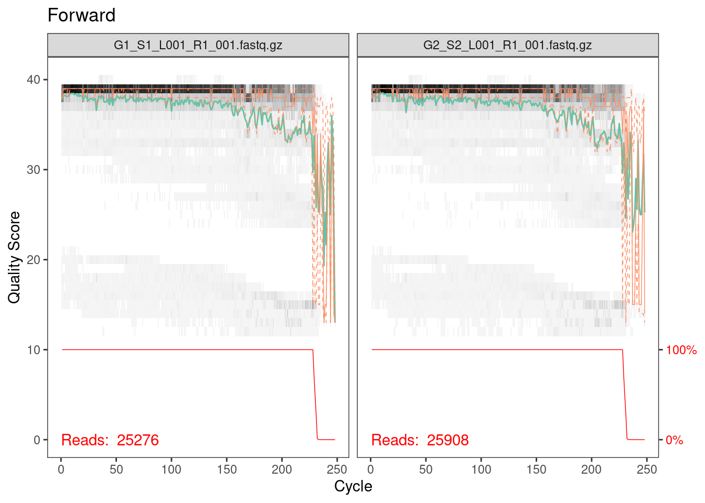
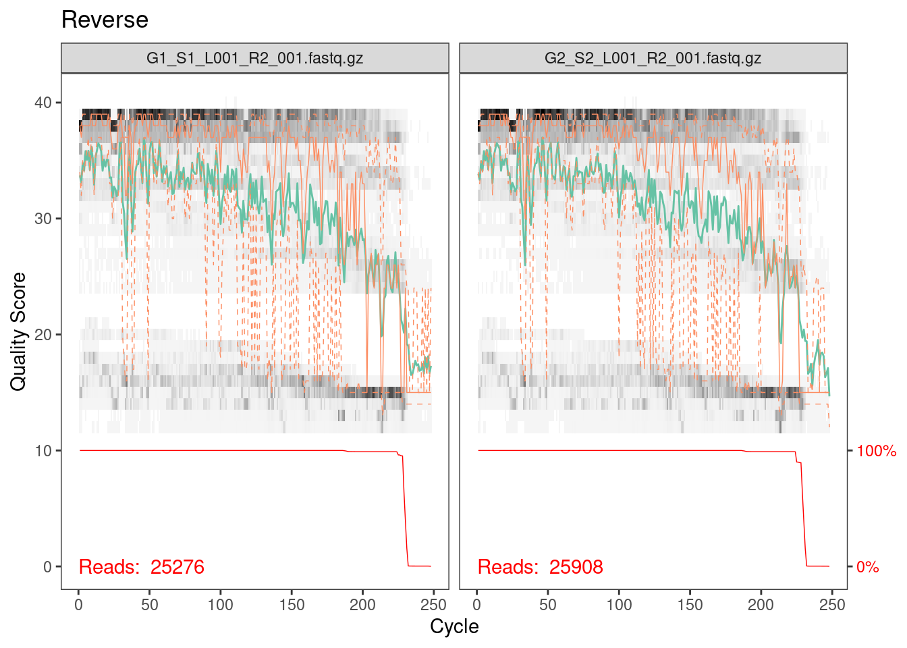
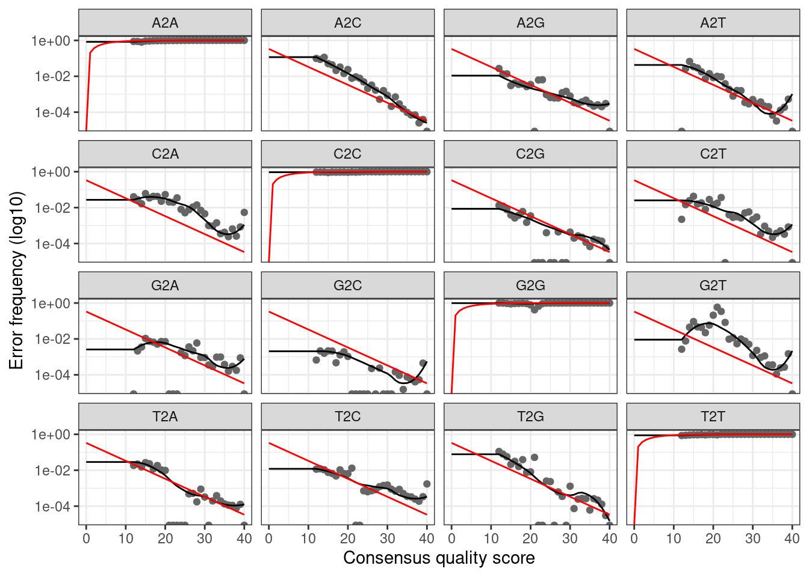

Setup
The DADA2
pipeline is used as a method to correct errors that are introduced
into sequencing data during amplicon sequencing. It is implemented as an
open-source R-package that will allow you to run through the entire
pipeline, including steps to filter, dereplicate, identify chimeras, and
merge paired-end reads. We will use one external application, cutadapt,
to remove primer sequences. The output of this pipeline is a table of
amplicon sequence variants (ASVs), as opposed to the traditional OTUs
seen in other amplicon sequencing workflows that cluster similar
sequences into a single OTU. DADA2 is capable of resolving biological
differences of 1 or 2 nucleotides, producing ASVs from amplicon data
that are of higher resolution than OTUs. For a more general and detailed
tutorial please see the dada2 website
Requirements
- MacOS or Linux. Windows is possible if you use Windows Subsystem for
Linux or a virtual machine like VirtualBox.
- A modern desktop or laptop. The memory and cpu requirements for
running dada2 are fairly modest. If you have a low-powered computer it
will still run but will likely take much longer.
Install R
To use DADA2, you must download and install R for your operating
system. This can be done here. You should use the latest
version of R. It is also highly recommned (but not required) to download
and install RStudio, which is an integrated development environment
(IDE) for R programming. This can be done through this link.
Install dada2
Since dada2 is available as part of the Bioconductor Project Package
Repository, first install Bioconductor.
install.packages("BiocManager")
To install the latest version of the DADA2 package (1.12.1), type the
following:
BiocManager::install("dada2", version = "3.9")
If you have previously installed R and Bioconductor, you may need
to update them to the most recent versions. This tutorial relies on
features of dada2 only in version 1.12.1 or greater
Install cutadapt
To use the DADA2 pipeline, primers must be removed from the amplicon
sequence data. In the following tutorial, we will be using the
cutadapt tool in R to do this. Cutadapt can be installed as
a conda package. If you do not already have conda installed, you can do
so here.
Once you have conda installed, go to Terminal or Command Prompt, and
type the following:
conda install -c bioconda cutadapt
Download files
This tutorial is run with the files listed on the Analysis page. Please download those and if you
want to follow along exactly then place them in a folder called
Miseq_Run in your home directory. Here we only use two
samples to keep the run time short but feel free to run it with all the
example files if desired.
You’ll also need the ITS2 database files formatted for IDTAXA. For
the purpose of this tutorial, the ITS2 database version used in this
guide can be found at https://doi.org/10.5281/zenodo.3235802. Please download
the Nematode_ITS2_1.0.0_idtaxa.fasta
file with sequences and the Nematode_ITS2_1.0.0_idtaxa.tax
taxonomy file.
For your own analysis, the latest version of our nematode ITS2 database can be found under
“Analysis” at the top navigation bar.
Preparing
Once you have installed the above, you are ready to start using the
DADA2 pipeline. The following is a sample analysis using the DADA2
pipeline (https://benjjneb.github.io/dada2/tutorial.html). This is
meant to be an example and not a definitive workflow. First, we load
packages and set a seed for reproducibility.
library(DECIPHER)
packageVersion("DECIPHER")
## [1] '2.28.0'
library(dada2)
packageVersion("dada2")
## [1] '1.28.0'
library(ShortRead)
packageVersion("ShortRead")
## [1] '1.58.0'
library(Biostrings)
packageVersion("Biostrings")
## [1] '2.68.1'
library(ggplot2)
packageVersion("ggplot2")
## [1] '3.4.4'
library(stringr) # not strictly required but handy
packageVersion("stringr")
## [1] '1.5.0'
library(readr)
packageVersion("readr")
## [1] '2.1.4'
To get started we’ll need to do a little prep. We’ll start by
defining the path of sequences to be processed (using “~/Miseq_Run” from
previous examples). The DADA2 pipeline is intended to be used with
demultiplexed, paired-end fastq files. That is to say, the samples must
be separated into individual files and ordered such that forward and
reverse reads of the same sample are matched. The pattern of the
filenames should be the same for all forward and reverse files. In this
example, the names are formatted as such:
samplename_R1_001.fastq.gz for forward reads and
samplename_R2_001.fastq.gz for reverse reads.
We then create a vector of file names, one for the forward reads and
one for the reverse. The samples vector contains our sample
names, extracted from the file names using a regular expression. For
Illumina data, often the sample name is everything before the first
underscore.
The primer sequences are defined here as well, because we’ll be
clipping those off shortly. The forward primer will be at the beginning
of the forward read and the reverse primer will be at the beginning of
the reverse read. The reverse complements are included in case the
amplicon sequence is shorter than our read length. When this happens the
sequence will contain the reverse complement of the opposite primer,
i.e. there may be reverse-complemented reverse primer at the end of the
forward read.
path <- "~/Miseq_Run"
fwd_files <- sort(list.files(path, pattern = "R1", full.names = TRUE))
rev_files <- sort(list.files(path, pattern = "R2", full.names = TRUE))
# It's also handy to have a vector of sample names, which in this case is everything up
# until the first underscore, which is what our regular expression caputres. You may
# also create this manually if you don't have too many samples
samples = str_extract(basename(fwd_files), "^[^_]+")
names(fwd_files) <- samples
names(rev_files) <- samples
fwd_primer <- "ACGTCTGGTTCAGGGTTGTT"
rev_primer <- "TTAGTTTCTTTTCCTCCGCT"
fwd_primer_rev <- as.character(reverseComplement(DNAStringSet(fwd_primer)))
rev_primer_rev <- as.character(reverseComplement(DNAStringSet(rev_primer)))
Before we move on let’s do a quick sanity check to make sure our
primer sequences are detected. The code below will count the number of
times we have a primer hit in our fastq file. Note that this is a quick
and dirty method to be sure that we have the right primer sequence. For
proper primer removal we’ll need something more sophisticated, like
cutadapt which we’ll demonstrate next.
# This function counts number of reads in which the primer is found
count_primers <- function(primer, filename) {
num_hits <- vcountPattern(primer, sread(readFastq(filename)), fixed = FALSE)
return(sum(num_hits > 0))
}
count_primers(fwd_primer, fwd_files[[1]])
## [1] 25357
count_primers(rev_primer, rev_files[[1]])
## [1] 21503
Primer removal
Now we can use cutadapt to remove primers, and check that they have
been successfully removed. Cutadapt was designed to remove sequencing
adapters that sometimes get left on the reads, however, it’s main
function is to detect and trim off regions that match a known sequence,
which is precisely what we want to do here.
Cutadapt is best installed using conda
(conda install cutadapt) and can also be used directly from
the command line. Here we demonstrate how to run it directly from R
using the system2 command but the results are the same
either way. The first parameter to system2 is the program
we wish to run and the second is character vector of arguments and their
values.
# CHANGE ME to the cutadapt path on your machine. If you've installed conda according to the
# provided instructions then this will likely be the same for you.
cutadapt <- path.expand("~/miniconda3/envs/cutadapt/bin/cutadapt")
# Make sure it works
system2(cutadapt, args = "--version")
Now output filenames are defined as well as parameters for cutadapt.
The critical parameters are the primer sequences and their orientation.
It’s strongly recommended that you review the cutadapt
documentation for full details of each parameter.
Briefly:
-g: sequence to trim off the 5’ end of the forward read
(forward primer)
-a: sequence to trim off the 3’ end of the forward read
(reverse complemented reverse primer)
-G: sequence to trim off the 5’ end of the reverse read
(reverse primer)
-A: sequence to trim off the 3’ end of the reverse read
(reverse complemented forward primer)
We’ll also add -m 50 to get rid of super short junky
reads, --max-n 1 to get rid of reads that have any N’s in
them and -n 2 so that cutadapt will remove multiple primer
hits if there happens to be read-through. The
--discard-untrimmed is also added so only reads that
contain a primer will be kept ensuring we keep only valid amplicons. And
finally a -q 15 will trim off low quality bases from the 3’
end.
In our experience this small amount of trimming can remove the need for
truncating the reads later on but this is something that may vary from
run to run it and an important paramter to consider for your own data
# Create an output directory to store the clipped files
cut_dir <- file.path(path, "cutadapt")
if (!dir.exists(cut_dir)) dir.create(cut_dir)
fwd_cut <- file.path(cut_dir, basename(fwd_files))
rev_cut <- file.path(cut_dir, basename(rev_files))
names(fwd_cut) <- samples
names(rev_cut) <- samples
# It's good practice to keep some log files so let's create some
# file names that we can use for those
cut_logs <- path.expand(file.path(cut_dir, paste0(samples, ".log")))
cutadapt_args <- c("-g", fwd_primer, "-a", rev_primer_rev,
"-G", rev_primer, "-A", fwd_primer_rev,
"-n", 2, "--discard-untrimmed")
# Loop over the list of files, running cutadapt on each file. If you don't have a vector of sample names or
# don't want to keep the log files you can set stdout = "" to output to the console or stdout = NULL to discard
for (i in seq_along(fwd_files)) {
system2(cutadapt,
args = c(cutadapt_args,
"-o", fwd_cut[i], "-p", rev_cut[i],
fwd_files[i], rev_files[i]),
stdout = cut_logs[i])
}
# quick check that we got something
head(list.files(cut_dir))
## [1] "G1_S1_L001_R1_001.fastq.gz" "G1_S1_L001_R2_001.fastq.gz"
## [3] "G1.log" "G2_S2_L001_R1_001.fastq.gz"
## [5] "G2_S2_L001_R2_001.fastq.gz" "G2.log"
Quality filtering
Inspect quality scores
Now that primers are removed, we can begin the DADA2 pipeline in
full. We start with plotting quality profiles of our sequences to
determine suitable quality filtering parameters. For the sake of speed
we only show 2 samples here but feel free to look at all your samples
(or more than 2 anyway).
plotQualityProfile(fwd_cut[1:2]) + ggtitle("Forward")

Everything looks pretty good here. The majority of our reads should
be 230 bp based on the fact that we trimmed 20 bp primers off the
beginning of the read. It looks like a very, very few did not get
trimmed properly but from the red line across the bottom, which is the
number of reads of that length, we can see that this is such a small
percentage that we don’t need to worry about it.
Side note
If you’re paying attention you might be asking why, if the primers
always appear at the same point in the read, can’t we just clip the
reads at this point. In fact, for some datasets, this one included, that
would be a valid strategy given that the all the ITS2 sequences are
longer than the read length (250 bp). However, this is not always the
case and as described above, if the amplicon length is less than the
read lenght we’ll have to find and remove the opposite primer. So in
general it’s good practice to use something like cutadapt which will
ensure the correct sequences are output.
plotQualityProfile(rev_cut[1:2]) + ggtitle("Reverse")

Reverse reads are lower quality as is always the case for Illumina
data. However, it looks like the quality average is above 20 for most of
the length of the read so we’ll go ahead with the analysis.
Filter reads
For the purposes of our analysis, we chose to conduct quality
filtering with maximum expected errors of 2 for the forward sequence, 5
for the reverse, to truncate after a quality score of 2 or lower.
Make your own decisions about trimming paramters! Your data will be
different, possibly very different, from ours so our parmeter choices
are likely to be not at all appropriate for your data. So don’t copy and
paste this code - think carefully about your data and choose parameters
appropriate for your data.
# Same as for the clippling we create an output directory to store the filtered files
filt_dir <- file.path(path, "filtered")
if (!dir.exists(filt_dir)) dir.create(filt_dir)
fwd_filt <- file.path(filt_dir, basename(fwd_files))
rev_filt <- file.path(filt_dir, basename(rev_files))
names(fwd_filt) <- samples
names(rev_filt) <- samples
filtered_out <- filterAndTrim(
fwd = fwd_cut,
filt = fwd_filt,
rev = rev_cut,
filt.rev = rev_filt,
maxEE = c(2, 5),
truncQ = 2,
rm.phix = TRUE,
compress = TRUE,
multithread = TRUE
)
head(filtered_out)
## reads.in reads.out
## G1_S1_L001_R1_001.fastq.gz 25276 24110
## G2_S2_L001_R1_001.fastq.gz 25908 24533
Main workflow
Learn errors
Here dada2 learns the error profile for your data using an interative
approach. These error profiles are used in the next step to correct
errors.
err_fwd <- learnErrors(fwd_filt, multithread = TRUE)
## 11163055 total bases in 48643 reads from 2 samples will be used for learning the error rates.
err_rev <- learnErrors(rev_filt, multithread = TRUE)
## 11118642 total bases in 48643 reads from 2 samples will be used for learning the error rates.
plotErrors(err_fwd, nominalQ = TRUE)

The plot shows how well the estimated error rates fit the observed
rates. The black line should line up reasonably well with the black
points. This looks reasonable so we continue on.
Denoising (aka error-correcting)
We can now denoise our sequences using the DADA algorithm. Note that
older versions of dada2 required a dereplication step that is now done
automatically by the dada function.
dada_fwd <- dada(fwd_filt, err = err_fwd, multithread = TRUE)
## Sample 1 - 24110 reads in 4919 unique sequences.
## Sample 2 - 24533 reads in 5351 unique sequences.
dada_rev <- dada(rev_filt, err = err_rev, multithread = TRUE)
## Sample 1 - 24110 reads in 15359 unique sequences.
## Sample 2 - 24533 reads in 15454 unique sequences.
Merge pairs
Now that we have accurate sequences we can merge the paired-end reads
to reconstruct the full amplicon sequence. Note that most sequences
should succesfully overlap, unless your trimming parameters
were too aggresive (i.e. too much sequence was trimmed off the end)
or you have amplicons that longer than the combined read length
(>500 bp, in this case). In the latter case these reads are still
useable but will need special handling (more details to come on those
cases).
mergers <- mergePairs(
dadaF = dada_fwd,
dadaR = dada_rev,
derepF = fwd_filt,
derepR = rev_filt,
maxMismatch = 1,
verbose=TRUE
)
Sequence table
Before we can assign taxonomy, we can construct a sequence table,
which lists the number of each sequence present in each sample. We can
see the dimensions of this sequence table, where the number of rows is
the number of samples and the number of columns is the number of total
unique sequences
seqtab <- makeSequenceTable(mergers)
dim(seqtab)
## [1] 2 55
Remove chimeras
Don’t be alarmed here if many of your sequences are discarded - the
number of chimeras varies but can be quite high in some cases.
seqtab_nochim <- removeBimeraDenovo(seqtab, method = "consensus", multithread = TRUE, verbose = TRUE)
dim(seqtab_nochim)
## [1] 2 19
Assigning taxonomy with IDTAXA
Now that we have a sequence table with the chimeras removed, we can
classify/assign taxonomy to the sequence variants. Although there are
multiple multiple taxonomic classification methods, we will be using
IdTaxa, which is available through the DECIPHER package.
You can read more about IdTaxa here.
Training the classifier
The IDTAXA classification method relies on a training set that
contains sequences that are representative of known taxa. Although there
exists trained classifiers, we will be using the ITS2 Nematode database
as our classifier. Since it is not trained, we will have to train the
classifier using LearnTaxa, which is also available as a
DECIPHER package. The train parameter of
LearnTaxa contains the sequences included in the classifier
as a DNAStringSet. Each sequence is formatted such that the names of
each taxonomic level is separated by a semicolon. Once the sequence
headers of the classifier are parsed, the taxonomy
parameter will contain the taxonomic assignment, separated by a
semicolon, for each sequence in train.
train <- readDNAStringSet("~/Nematode_ITS2_1.0.0_idtaxa.fasta")
tax <- read_tsv("~/Nematode_ITS2_1.0.0_idtaxa.tax")
# Train the classifier
trainingSet <- LearnTaxa(train, names(train), tax)
## ================================================================================
##
## Time difference of 131.39 secs
Running IdTaxa
To use IdTaxa, we will need to convert the unique sequence variants
that we want to classify into a DNAStringSet object. Now that we have
our trained classifier (i.e. training set) and the sequences we want to
classify, we can run IdTaxa. You can change various
parameters of IdTaxa depending on your data. We recommend
reviewing the [IdTaxa documentation] (https://rdrr.io/bioc/DECIPHER/man/IdTaxa.html) for
further information. Here, we have specified several parameters:
strand = "both" : by setting the strand
parameter to “both”, each sequence variant is classified using both the
forward and reverse complement orientation. The sequence varient will be
classified as the result with the highest confidence.threshold = 60 : setting the threshold to
60 specifies when the taxonomic classifications are truncated. A lower
threshold usually results in higher taxonomic level classifications, but
lower accuracy (i.e. confidence). A higher threshold usually results in
lower taxonomic level classifications, but with higher accuracy.bootstraps = 100 : this specifies the amount of times
bootstrap replicates are performed for each sequence.processors = NULL : automatically uses all available
processors.verbose = TRUE : displays progress.type = "extended" : by setting the type to
“extended”, the output for each sequence variant will contain the
taxonomic classification, the names of each taxonomic rank, and the
confidence of the assignment.
dna <- DNAStringSet(getSequences(seqtab_nochim))
idtaxa <- IdTaxa(dna,
trainingSet,
strand = "both",
threshold = 60,
bootstraps = 100,
processors = NULL,
verbose = TRUE,
type = "extended")
## ================================================================================
##
## Time difference of 0.56 secs
Although it contains all the necessary information, the output of
IdTaxa is not as intuitive as we would like. It outputs a
list of the sequence variants. Within this list, each element will have
its taxonomic classification and the confidence for each taxon. To
facilitate easier manipulation and comprehension of the data, we will
convert this list into a matrix, with the rows as the sequence variants
and the columns as their taxonomic classifications. We also drop the
“Root” column.
taxid <- t(sapply(idtaxa, function(x) setNames(x$taxon, x$rank)))[, -1]
Over to phyloseq
The individual pieces of the analysis can be save to text or excel
files but if you’ve made it this far then why not continue on in R! Phyloseq is a powerful
toolkit for working with these types of data in R and is the recommended
next step for analysis. More tutorials on downstream analysis to
come!
library(phyloseq)
# This is just a placeholder - normally this would be a dataframe containing all your sample inforamtion,
# with rownames matching the sample names
samp_data <- data.frame(
row.names = samples,
sample = samples
)
# We need better tables for our sequences than the actual sequence which is the dada2 default
asvs <- paste0("ASV_", 1:length(dna))
rownames(taxid) <- asvs
colnames(seqtab_nochim) <- asvs
names(dna) <- asvs
# Now we put everything into one phyloseq object (even the sequences) so it is easy to use
physeq = phyloseq(
otu_table(seqtab_nochim, taxa_are_rows = FALSE),
tax_table(taxid),
sample_data(samp_data),
dna
)
physeq
## phyloseq-class experiment-level object
## otu_table() OTU Table: [ 19 taxa and 2 samples ]
## sample_data() Sample Data: [ 2 samples by 1 sample variables ]
## tax_table() Taxonomy Table: [ 19 taxa by 8 taxonomic ranks ]
## refseq() DNAStringSet: [ 19 reference sequences ]